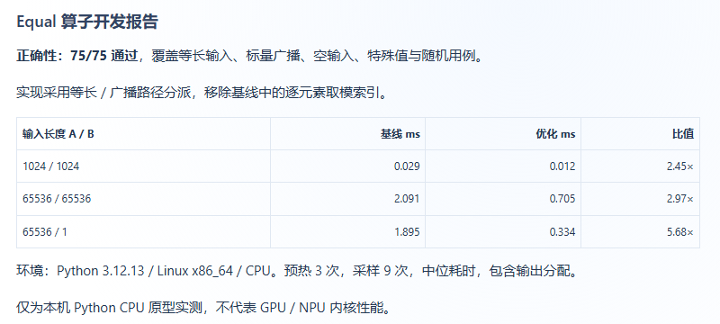

Joint power and spectrum allocation for bidirectional full-duplex V2V communications underlaying cellular V2I uplinks
Physical Communication 80, 103403 (2026) · 第一作者 · 已发表 · DOI
从双向链路的可靠性约束推导发射功率上界，再以可行配对的容量为权重分配频谱。
天津师范大学智能科学与技术硕士研究生

我研究车联网中的无线资源分配。当双向车载链路与蜂窝上行链路共享频谱时，我关心怎样选择复用链路、分配发射功率，同时满足通信可靠性要求。
近期也关注 Coding Agent 的执行可靠性。我开发了 KitAgent，用 Equal 算子演示如何根据测试结果检查代码修改，并比较修改前后的性能。
Physical Communication 80, 103403 (2026) · 第一作者 · 已发表 · DOI
从双向链路的可靠性约束推导发射功率上界，再以可行配对的容量为权重分配频谱。
第一作者 · 在审
在上述资源分配模型的基础上，研究如何在可靠性约束下加快候选配对评估。
ICCEAI 2025 · 第二作者 · 官方会议日程
Optics & Laser Technology 180, 111467 (2025) · 第二作者 · DOI
参与数值仿真与软件实现，研究反射屏几何结构对太赫兹喷流形状的影响。
Measurement 239, 115530 (2025) · 第二作者 · DOI
参与软件实现与定量分析，考察光子喷流特征随折射率变化的规律。
第三作者 · 在审
系统实现与评测
我用 Python 和 asyncio 开发了 KitAgent。在工作台上可以查看每轮代码差异、逐项测试结果，以及基线和候选实现在同一组输入上的耗时。

在 Graph + SQLite + Local 模式下，进程重启后会复用已记录的工具结果。上次执行结果未知的调用会暂停，避免重复执行。在单节点 kind + Cilium 离线验收中，20 个并发会话完成了 200 次跨会话读写探测，均未发现泄漏。
用 Ascend C 实现逐元素比较，负责 Host 侧分块与 AICore 计算内核，支持 1–8 维广播。实现已合入 CANN 的 ops-math 仓库。
在字节跳动工程训练营开发。把抽取字段、原文证据和评分关联到同一用例，修改规则后在独立工作区回放失败样例和此前通过的样例。仓库提供 20 个合成回放用例。
智能科学与技术 · 硕士研究生
研究生一等学业奖学金（2024、2025）
信息与计算科学 · 本科
AI 研发实习。在财务问答系统中，用 100 组多轮会话比较上下文策略：历史摘要加近期消息，比拼接完整历史少用 35% 的回答阶段平均单轮输入 token。
后端开发实习。为汽车技术文档实现混合检索，在 150 条标有证据的问答上做离线评测，调优后 Recall@5 从 54% 提高到 95% 以上。
我和队友优化稀疏注意力反向算子 SparseFlashAttentionGrad。五分片初稿中，处理行数较少的核承担了额外的梯度归约，反而最晚完成。我们据此重新分配归约任务。在昇腾 910B3 上与同轮连续 C1 基线配对测速，正序耗时从 280.17 降至 258.99 μs，反序从 275.31 降至 259.71 μs，分别降低 7.56% 和 5.67%。
为视频生成实现变长三维旋转位置编码算子 VarLenNdRotaryPosEmb，在不同注意力头之间复用旋转系数。69 组回归输入的输出均通过与 PyTorch 参考实现的容差校验。
期刊审稿人（节选） · Vehicular Communications、Physical Communication